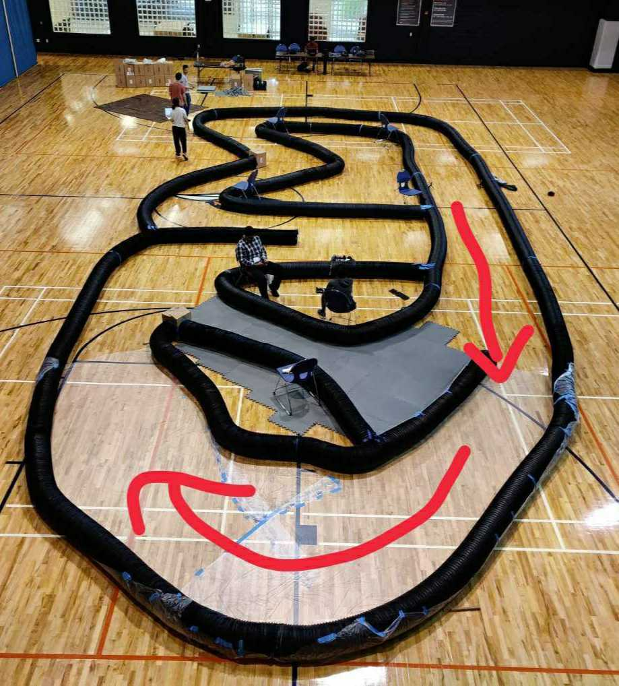

|
|
|
I was a core member of CMU's F1TENTH team. Based on the F1TENTH platform (you can even spot me on the website), we built a 1:10 scaled autonomous race car and developed autonomy software including SLAM, state estimation, raceline optimization, and tracking control. It is able to perform head-to-head racing and reach a maximum velocity of 20 km/h. I participated in the competition in San Antonio within the Cyber-Physical Systems and Internet-of-Things Week in May 2023, and the team advanced to the semi-final. During my involvement, I worked on integrated planning and control from simulation to hardware. Things I used for the project:

 Note: we ended up using simple methods for the race. |
| ← back to projects |